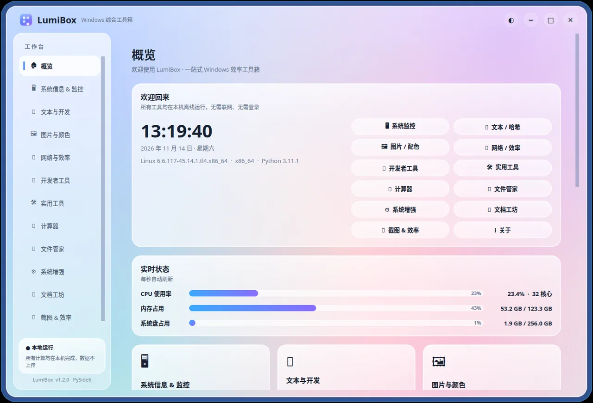

把常用小工具，
放进一个安静的窗口
LumiBox 是一个 Windows 桌面综合工具箱。
系统监控、开发调试、文件整理、文档处理、专注计时 —— 十三个页面，全部本地运行。

一个窗口
数据不出机
日常要用到的，都在这里
十三个页面，二十七般工具
UI 与逻辑分离，所有计算留在本机。点开分类，看看每个页面都装了什么。
系统监控
CPU / 内存 / 磁盘 / 交换分区实时曲线、上下行网速、运行时长、内存占用 Top 进程。
实时硬件与磁盘健康
硬件详情、分区容量、S.M.A.R.T. 状态、温度与通电时间、I/O 统计。
S.M.A.R.T.启动项与服务
注册表 Run 项、启动文件夹与服务状态管理，开机自启一目了然。
需管理员端口扫描与测速
并发 TCP 探测，支持 80,443,8000-8100 区间语法，测量下载吞吐与延迟。
定时任务
倒计时提醒、定时关机 / 重启、自定义命令，关机可随时取消。
可取消局域网设备扫描
ping 并发探测 + ARP 表 MAC + OUI 厂商识别，结果导出 CSV。
导出 CSV窗口与托盘
置顶开关、30%~100% 透明度调节、托盘常驻与全局热键唤出。
热键hosts 编辑
语法解析、预设模板、每次保存自动备份，双击即可恢复。
自动备份进制转换器
2~36 进制即时联动、位宽 / 字节序 / ASCII、位运算与字符码点互换。
2–36编码转换
UTF-8 / GBK / GB18030 / Big5 / Shift-JIS 等 18 种编码互转，HEX 字节视图与乱码修复。
18 种文本与哈希
SHA 家族等 10 种哈希（支持超大文件分块）、Base64 / 32 / 16、JSON 格式化与正则测试。
10 种哈希随机数与 UUID
整数 / 均匀 / 正态 / 抽签，secrets 安全随机源；UUID v1~v7 批量生成最多 10 万条。
反编译分析
.pyc 头解析 + 字节码反汇编，PyInstaller CArchive / PYZ 归档提取与导出。
剪贴板历史
自动捕获 100 条、去重、双击回写、支持导出。
100 条计算器
标准 / 科学 / 程序员三模式，位视图实时联动，支持小键盘全程盲打与历史回填。
小键盘二维码 · 转盘 · 密码
本地二维码生成与解析、缓动转盘开奖、secrets 强密码与熵强度评估。
重复文件清理
大小分组 → 快速摘要 → 全哈希确认，默认保留原件，结果可导出报告。
安全去重批量重命名
序号 / 前后缀 / 正则 / 大小写 / 时间戳，实时预览、冲突检测、一键撤销。
可撤销文件粉碎机
0 / FF / 随机多轮覆写 + fsync + 改名删除，二次确认防误操作。
多轮覆写格式互转
JSON ↔ YAML ↔ TOML ↔ XML ↔ CSV，CSV ↔ Excel 多工作表互转。
5 种格式Markdown
实时预览，表格与代码高亮，导出 HTML / PDF，附字数统计。
实时预览OCR 文字识别
图片 / 剪贴板 / 扫描页提取文字，PDF 有文本层时直接读取。
可选组件文档转换
PDF → PPTX、PPTX → PDF、PPT ↔ PPTX，逐页高清渲染、版式保真。
高清密码保险箱
Fernet (AES) + PBKDF2（48 万次迭代）本地加密，主密码由你保管。
本地加密图片处理
灰度 / 反色 / 翻转 / 旋转 / 锐化 / 模糊、等比缩放、PNG / JPEG / WEBP / BMP 转换。
4 种格式取色与配色
点击取色、HEX ↔ RGB / HSL / HSV 换算、调色板与随机和谐配色。
HSL / HSV网络与效率
时间戳换算、IP 与网址可达性检测、7 类单位换算、下载吞吐量测试。
7 类换算截图与贴图
全屏 / 框选截图，可缩放、可调透明度的置顶参考图，支持保存 / 复制。
置顶番茄钟
专注 / 短休 / 长休 / 自定义，三种预设，统计持久化到本地。
统计待办清单
优先级、勾选、编辑与导出，本地保存不依赖账号。
本地保存亮 / 暗双主题
液态玻璃自绘控件，低亮度暗色与文字对比度优化，长时间使用也舒适。
双主题快捷键体系
Ctrl+1~9 切页、Ctrl+` 隐藏 / 显示、Ctrl+Alt+S 快速截图。
所有功能默认离线运行。仅「公网 IP 查询」「网址可达性检测」「下载测速」会联网；hosts 写入、启动项 / 服务修改、定时关机需要管理员权限。
三步，开始使用
一个 zip、两个 bat。装好环境以后，日常双击 run.bat 就能启动。
LumiBox v1.2.0
Windows 10 / 11 · 中文界面 · 含全部 13 个页面与 32 张预览图
解压
下载 zip，解压到任意目录（路径建议不含空格）。
安装环境
双击 一键安装运行环境.bat，自动检测 Python、安装依赖并自检。
开始使用
之后双击 run.bat 启动；build.bat 可打包独立 exe。
◈ 环境要求
- Windows 10 / 11（64 位）
- Python 3.10+，安装时勾选 Add to PATH
- 依赖由安装脚本自动配置，失败自动切换清华镜像源
- OCR 需额外安装 tesseract-ocr（含 chi_sim）
- PPT 旧格式互转需本机 LibreOffice
⌘ 手动安装 / 打包
pip install -r requirements.txt python main.py # 打包成独立 exe build.bat
绿色软件，不写注册表、不常驻后台服务。所有计算本地完成，卸载时直接删除目录即可。
安静、克制，随手可用
一个不打扰你的工具箱。没有账号、没有上报、没有云端。
LumiBox
基于 Python + PySide6 / Qt 6 构建的 Windows 桌面综合工具集。无边框窗口、自绘液态玻璃控件、亮 / 暗双主题，把日常高频的效率、开发、系统、文件与文档工具收进一个窗口。
隐私优先
所有计算本地完成。仅公网 IP 查询、网址可达性检测、下载测速三项会联网。密码保险箱使用主密码本地加密，作者与任何服务都无法找回。
逻辑与界面解耦
纯逻辑集中在 extra.py / power.py / doc_extra.py，便于测试与复用；页面统一使用玻璃控件与公共辅助函数。
亮暗双主题
液态玻璃自绘控件，低亮度暗色降低长时间使用的疲劳感，文字对比度单独优化。
开源与贡献
MIT 协议，欢迎 Issue 与 PR。保持亮暗主题均正常、新逻辑与 UI 解耦即可。
相关链接
官网地址：http://lumibox.jhhcn.icu/ · MIT © 2026 LumiBox Contributors
说点什么，大家都看得见
留言保存在服务端，任何访客打开这个页面都能看到。写下使用感受、功能建议，或只是打个招呼。
发表留言
正在连接…无需注册。昵称与内容会公开显示，请勿填写手机号、密码等敏感信息。
大家的话 0
正在读取留言…
留言存于服务端 data/messages.json，不会写进浏览器缓存。站长可随时导出备份或删除内容；同一 IP 30 秒内最多 30 条、相同内容 60 秒内不可重复发表，避免刷屏。